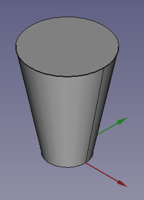

11. Piezas cónicas¶
En este tutorial vamos a aprender a utilizar otro tipo de piezas sólidas, los conos.
Abrimos la aplicación FreeCAD para Windows, y hacemos clic en el icono para crear un nuevo documento
 .
.Seleccionamos el banco de trabajo Part para comenzar a diseñar objetos en 3 dimensiones.
En este punto vamos a añadir los ejes de referencia para que nos ayuden a situar las piezas correctamente.
En el menú
Ver... Activar o desactivar cruz de los ejes.
Ahora creamos un cono clicando el cuarto icono de la barra de objetos sólidos.

Seleccionamos ver la pieza en vista isométrica.

La pieza se verá como en la siguiente imagen.
A continuación vamos a modificar los radios del cono para que se parezca más a un cono de carretera. En la pestaña de Datos cambiamos los parámetros.
Radio1 (Radius1) = 6 mm
Radio2 (Radius2) = 1 mm
Altura (Height) = 20 mm
Ahora la pieza se verá como en la siguiente imagen.

Para continuar convirtiendo nuestro cono en un cono de carretera, vamos a añadir un cubo al que daremos las siguientes dimensiones.
Longitud (Lenght) = 14 mm
Anchura (Width) = 14 mm
Altura (Height) = 2 mm
A continuación desplazamos el cono, para que coincidan las piezas, a la siguiente posición.
x = 7 mm
y = 7 mm
z = 0 mm
Con lo que obtendremos la siguiente pieza.

Para terminar, escogeremos la herramienta de redondear los bordes de una pieza y cambiaremos los parámetros que aparecen en la imagen.

Clicando en OK la pieza cambiará como en la figura.

Fusionando las dos piezas tendremos nuestro cono de carretera.
Ejercicios¶
Crear un vaso con dos piezas cónicas, restando una de la otra. Las medidas del vaso serán las siguientes.
Radio inferior = 20 mm
Radio superior = 30 mm
Altura = 80 mm
Espesor de pared = 1 mm

Para que el vaso tenga suelo, recuerda que el segundo cono debe estar elevado un milímetro en el eje z.
Crear una pulsera de tachuelas como la de la imagen.